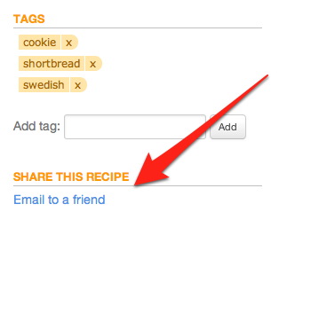

One tsp. is designed for storing your own private collection of recipes. Recipes you add to One tsp. cannot be viewed by other One tsp. users.
You can share recipes by email with people you know. Every recipe page has an "email to a friend" link. A copy of the recipe will be delivered to your friend's email account. If they also have a One tsp. account, they will have the option to copy the recipe directly into their account.
